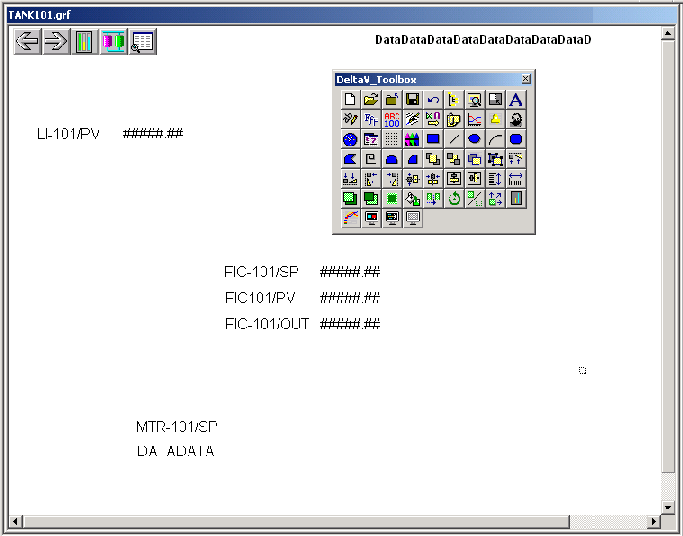

Creating datalinks
Datalinks can be used to display data as numbers or text. For the TANK101 picture, you will create five datalinks for the following purposes:
To display the current value of the tank level (parameter reference: LI-101/AI/PV)
To display the current value of the loop process value (parameter reference: FIC-101/PID1/PV)
To allow entry of a setpoint value for the flow loop (parameter reference: FIC-101/PID1/SP)
To allow the operator to set the regulatory valve position (parameter reference: FIC-101/OUT)
To allow the operator to start and stop the pump motor (parameter reference: MTR-101/DC1/SP_D)
After you have created the links, your working area will look like this:
